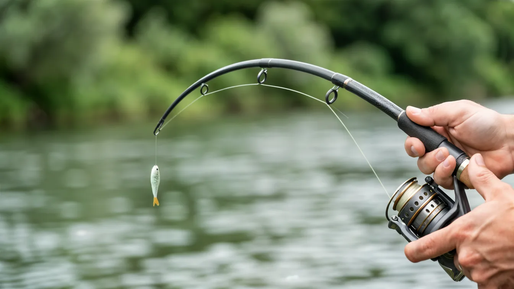
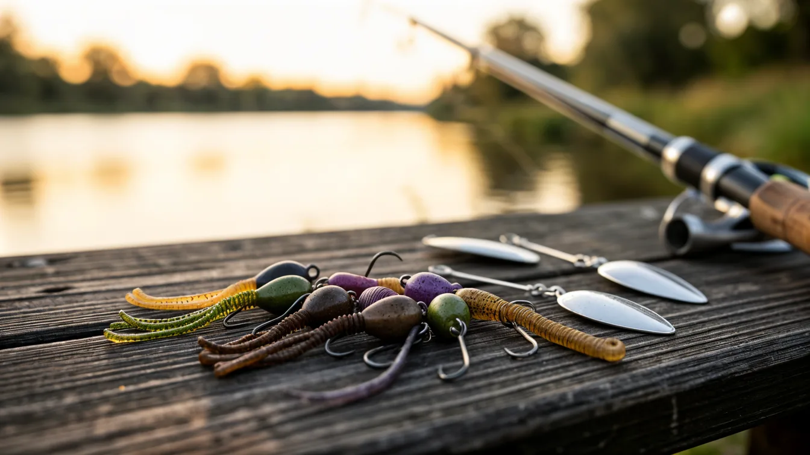
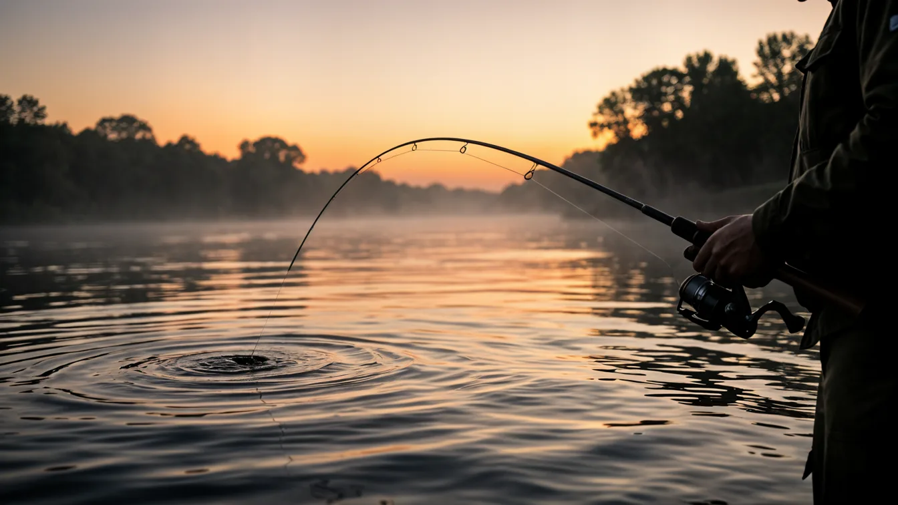
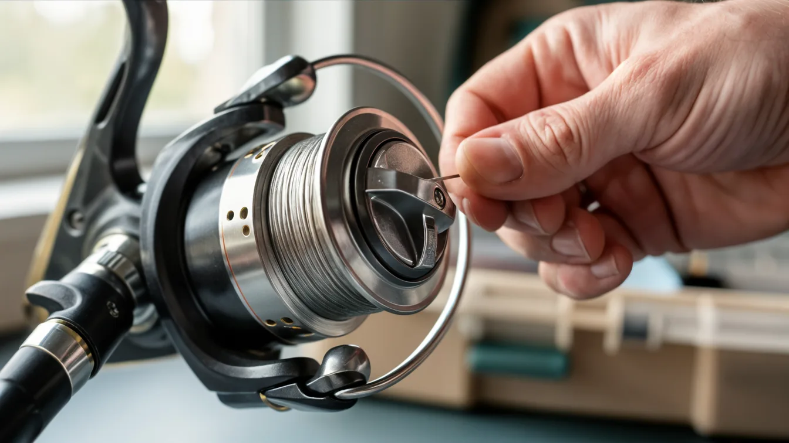

Хищник, который видит ночью
Судак устроен иначе, чем окунь или щука. Его глаза имеют светоотражающий слой, который улавливает даже слабый лунный свет. Это делает его грозой ночных водоёмов. Днём он уходит на глубину и стоит в укрытии, а с наступлением сумерек выходит на охоту.
Важно понимать его рацион. Основу составляют узкотелые рыбы: уклейка, пескарь, елец, молодь густеры. Судак не тратит энергию на широкую добычу. Ему легко заглотить рыбу, которую можно проглотить целиком, не разжёвывая. Поэтому его пасть сравнительно узкая, и приманки он предпочитает соответствующие.
Ещё одна деталь. Судак держится стаями. Если ты поймал одного, то с высокой вероятностью в точке стоят ещё несколько особей. Но стая — это не хаотичное скопление. Внутри есть иерархия, и крупные особи занимают лучшие позиции у дна, а молодь держится чуть выше и по краям.
Течение для него критично. Судак любит участки с обратным течением или с плавным замедлением потока. Он не стоит в основной струе, тратя силы на сопротивление. Его зона — это граница между быстрой и медленной водой, где скапливается кормовая рыба.
Сезонная логика судака
Весна начинается после нереста. Это примерно конец апреля или начало мая в средней полосе. Рыба отходит от нерестилищ и начинает активно восстанавливать силы. Ключевое окно — это прогрев воды до 10–12 градусов. В это время судак выходит на прибрежные бровки и поливы с глубинами 2–4 метра, где вода прогревается быстрее.
Летом картина меняется. Судак уходит на глубины и ведёт ночной образ жизни. Ключевые точки — это русловые свалы, бровки, закоряженные ямы. Днём он стоит в самых тёмных углах, а активничает с 22 часов до 2 ночи и под утро. Летняя рыбалка — это рыбалка по фонарику и по точному знанию рельефа.
Осень — это золотая пора для охоты за клыкастым. После первых заморозков вода начинает остывать, и рыба начинает нагуливать жир перед зимой. Судак переходит на дневное питание, активность смещается на светлое время суток. Лучшие месяцы — это сентябрь и октябрь. В ноябре он уходит на зимовальные ямы, и поймать его сложнее.
Зимой судак стоит на ямах и кормится крайне вяло. Но это не значит, что его невозможно поймать. Вертикальное блеснение и балансиры работают, но требуют от рыболова максимальной концентрации. Поклёвка зимой — это часто лёгкий тычок или просто остановка блесны.
Собираем снасть с цифрами
Подбор снасти зависит от условий ловли, но есть базовый набор, который покроет большинство ситуаций.
Удилище для джига. Для ловли с берега на реке оптимальным будет спиннинг длиной 2,4 м с тестом 10–30 г. Такой бланк позволит делать дальние забросы и уверенно контролировать проводку на течении. Для лодочной ловли подойдёт длина 2,1–2,2 м с тестом 7–21 г. Строй удилища быстрый: он даёт резкую подсечку и позволяет просекать плотную пасть судака. Медленный бланк оставит тебя без засечки.

Катушка нужна размером 2500–3000. Передаточное число выше 5.2. Судак не требует силовой подмотки, но темп проводки может быть высоким. Фрикцион обязателен: резкие рывки в глубину он компенсирует и не даёт рыбе сойти на ослабленном шнуре.
Плетёный шнур диаметром 0,10–0,14 мм, разрывная нагрузка 6–8 кг. Плетёнка не должна тянуться — тогда ты будешь чувствовать даже слабое касание приманкой дна. Толстый шнур создаёт парусность и сносит лёгкие приманки течением, тонкий — режет пальцы.
Поводок. Для чисто судачьей ловли лучше использовать флюорокарбон диаметром 0,28–0,35 мм — он менее заметен в воде и не отпугивает осторожную рыбу. Если рядом есть щука, ставь металлический поводок длиной 15–20 см: судак зубами леску не режет, а щука — режет.
Приманки: когда какая работает

Разнообразие приманок для судака огромно, но все их можно разделить по условиям применения.
Силиконовые приманки — это база. Основной размер — 3–4 дюйма. Твистеры и виброхвосты с узким телом. Классика от Акрон, Хаос, Святогор. Они делают активную игру даже на медленной проводке. На течении используй более тяжёлую огрузку, чтобы приманка достигла дна быстро.
Колеблющиеся блёсны. Судак реагирует на них в период активного жора осенью. Колебалка весом 15–25 г с узким телом. Проводка равномерная или с небольшими паузами. Лучше работают блёсны с серебристой или голубой окраской, имитирующие уклейку.
Воблеры для судака имеют свои особенности. Это минноу с узким телом и заглублением 2–6 м. Классика от Бомбер, Смит, Мегабас. Твичинговая проводка с резкими рывками и паузами: судак атакует в момент остановки воблера, когда тот замирает и слегка всплывает.
Джиг-головки с разнесённым монтажом. Это шарнирный монтаж, где грузило отделено от крючка. Он даёт большую свободу движения приманке и особенно эффективен на течении, где силиконка играет натуральнее.
Цвет приманки важен. В мутной воде работает тёмный цвет: коричневый, чёрный, тёмно-зелёный. В чистой воде лучше серебро и белый с лёгким отливом. В сумерках кислотные цвета дают преимущество.
Техника ловли пошагово

Стандартная джиговая проводка — это не просто равномерная намотка. Это цикл, который включает заброс, паузу для опускания, серию оборотов, снова паузу. Важно контролировать каждое касание дна.
Классический джиг
Делаешь заброс в точку. Ждёшь, когда приманка коснётся дна — обычно это 2–5 секунд в зависимости от глубины. После касания делаешь 2–3 оборота катушки. Скорость подмотки должна быть такой, чтобы приманка шла у самого дна, иногда чиркая по нему. После подмотки — снова пауза до касания дна. Цикл повторяешь.
Пауза — это ключевой момент. Судак часто берёт именно в момент падения приманки на дно. Если ты просто равномерно крутишь катушку, ты пропускаешь 70% поклёвок.
Ступенька с волочением
Этот вариант применяется, когда дно чистое, без травы и коряг. Опустил приманку на дно, сделал один оборот катушки так, чтобы грузик протащился по дну несколько сантиметров, потом пауза. Такая проводка медленная и провоцирует пассивного судака длинной паузой.
Твичинг воблера
Резкий рывок удилищем в сторону, затем подмотка слабины, снова рывок. Пауза от 2 до 5 секунд. В момент паузы воблер всплывает и дрожит. Судак атакует именно в момент зависания. Важно делать рывки разной амплитуды, чтобы найти ту игру, на которую рыба реагирует сегодня.
Подсечка и вываживание
Подсечка должна быть резкой и короткой. Судак имеет костистую пасть, и слабая подсечка просто не пробьёт её. После подсечки сразу начинай вываживание. Не давай рыбе уйти в корягу. Удилище держи под углом 45°, не поднимай вертикально. Поддерживай постоянное натяжение шнура.
Сценарии сложных условий
Мелководье
Судак на мели — это ночная история. Глубины 1,5–2 м, песчаные косы. Здесь лучше работают лёгкие джиг-головки 8–12 г и воблеры-минноу с мелким заглублением. Проводка медленная, с максимально длинными паузами.
Глубина
Если рыба стоит на глубине 6–10 м, нужен тяжёлый джиг 30–40 г. Важно быстро доставить приманку на дно. Используй более тонкий шнур, чтобы минимизировать парусность. На глубине судак берёт увереннее, но и вываживание требует терпения.
Коряжник
Самые сложные условия. Здесь каждый заброс — риск зацепа, но и судак стоит именно там. Используй офсетный крючок и незацепляйку. Проводка должна быть медленной, без резких рывков. Грузило лучше использовать от 20 г, чтобы оно быстро пробивало толщу воды и меньше цеплялось за ветки.
Сводная таблица по условиям
| Условия | Снасть | Приманка | Тактика |
|---|---|---|---|
| Весна, берег, 2–4 м | Спиннинг 2,4 м, тест 10–30, шнур 0,12 | Силикон 3–4″, джиг 14–18 г | Классический джиг с длинными паузами |
| Лето, ночь, 4–8 м | Спиннинг 2,1 м, тест 7–21, шнур 0,10 | Воблер-минноу, глубина 3–5 м | Медленный твичинг с паузами до 5 сек |
| Осень, день, 5–10 м | Спиннинг 2,4 м, тест 15–40, шнур 0,14 | Силикон 4–5″, джиг 25–35 г | Ступенька с волочением по дну |
| Коряжник | Спиннинг 2,4 м, тест 10–30, шнур 0,12 | Незацепляйка, офсетный крючок | Медленная проводка с подёргиваниями |
| Глубокий свал | Спиннинг 2,6 м, тест 20–50, шнур 0,14 | Тяжёлая колебалка 25–40 г | Равномерная проводка в среднем темпе |
Итог
Успех в ловле судака — это не магия и не удача. Это система: знание точек, правильная подача приманки и терпение. Начни с классического джига на глубинах 4–6 м. Ставь силикон естественного цвета. Используй паузы. Через несколько рыбалок ты начнёшь чувствовать разницу между пустым дном и рыбой под ним.
Если ты впервые выходишь на судака, забудь о воблерах и блёснах. Освой джиг — он даёт больше контроля и информации. И не бойся экспериментировать со скоростью проводки: сегодня судак взял на медленную ступеньку, а завтра ему подавай агрессивный твичинг. Подстраивайся под рыбу, и результат не заставит себя ждать.
Какая катушка нужна под твой стиль
Катушка — это сердце спиннинговой снасти. Можно купить дорогой бланк и шнур, но дешёвая катушка с люфтами и плохой укладкой убьёт всю магию. Дорогая катушка на кривых руках не поможет. Поэтому к выбору надо подходить с холодной головой и знанием конкретных цифр.
Рынок предлагает сотни моделей, цены — от тысячи до ста тысяч рублей. Новичок смотрит на красивый корпус и количество подшипников, а потом мучается с бородами и плохим забросом. Эксперт смотрит на вес, передаточное число и материал шестерён.

Вывод за 30 секунд. Для ловли на джиг и твичинг в пресной воде выбирай катушку размером 2500 по классификации Шимано. Вес до 230 г. Передаточное число 6.2:1. Фрикцион с передним расположением. Стоимость от 8 до 15 тысяч рублей.
За эти деньги ты получаешь алюминиевую шпулю, стабильный фрикцион и запас по прочности на несколько сезонов. Дороже покупать нет смысла, если ты не ловишь трофейного тайменя на Енисее. Дешевле брать тоже не стоит — люфты появятся через месяц.
Опыт автора. Я перебрал больше двадцати катушек за десять лет — от китайского нонейма за две тысячи до флагманов за сорок. Разница между катушкой за три и за десять тысяч огромная. А вот между моделями за десять и за двадцать тысяч разница уже не такая заметная — прибавка идёт только в весе и плавности хода.
Ключевой параметр — масса. Бери катушку до 230 г. Если она тяжелее, баланс удилища нарушается, рука устаёт через час активного твичинга. Равновесие должно быть чуть выше катушкодержателя. Уронил катушку — проверь, не появился ли люфт ручки. Есть люфт — неси обратно в магазин, это брак.
Передаточное число решает, насколько быстро ты ведёшь приманку. 6.2:1 — оптимальная скорость для классических проводок джига и твичинга. Число выше 7.0:1 оставь для делво-вокеров на море или ловли окуня на микроколебалки. Низкое число 4.7:1 используй для травления шнура на больших глубинах.
Частая ошибка. Покупать катушку с задним фрикционом для джига. Задний фрикцион не позволяет быстро менять усилие при вываживании: одна рука занята удилищем, вторая крутит ручку. Чтобы ослабить фрикцион, нужно отпустить ручку и переложить удилище — пока ты это делаешь, щука уходит в коряги.
Передний фрикцион настраивается большим пальцем руки, которая держит удилище, — это экономит секунды. А на вываживании трофея секунды решают всё. Также проверь плавность хода: вращай ручку медленно, не должно быть заеданий и щелчков. Обратное вращение ротора должно быть почти бесшумным — если слышен треск, эта катушка долго не проживёт.
Миф и правда. Есть миф, что чем больше подшипников, тем лучше катушка. Это не так. Восемь подшипников — это норма, двенадцать — уже маркетинг. Качество подшипников важнее количества: японские и немецкие ходят годами, китайские забиваются пылью за сезон. Смотри на марку, а не на количество.
Смотри на шпулю. Она должна быть алюминиевой, без напыления. Пластиковые шпули выходят из строя быстро и начинают люфтить. Диаметр шпули напрямую влияет на дальность заброса: для размера 2500 стандартный диаметр 45–46 мм. На 2500 влезает 150 м шнура диаметром 0,16 мм — этого хватит для любых условий.
Секрет. При выборе катушки проверь усилие фрикциона на малых нагрузках. Дома зажми шпулю рукой и попробуй прокрутить. На минимальном усилии шпуля должна стопориться мгновенно. На максимальном — шнур должен стравливаться рывками без инерции. Это тест на плавность работы конусного механизма.
Если ты ловишь джигом на реке с течением, бери размер 3000 с большим запасом шнура. Для окуня на микроджиг хватит размера 1000. Для щуки на твичинг крупных воблеров бери 2500 с пониженным передаточным числом. Не гонись за универсальностью — лучше купить две катушки под разные задачи.
Совет. После покупки не поленись смазать катушку тонкой смазкой. На заводе их смазывают консервантом, который густеет на морозе, и первый выезд при минусовой температуре может закончиться клином. Разбери, протри, смажь и собери — процедура занимает полчаса, зато катушка ходит шелково весь сезон.
Если собираешься рыбачить часто, заведи запасную шпулю. На основной храни шнур 0,14 мм, на запасной намотай 0,16 мм для условий, когда нужна прочность. Утром в траве ставишь шпулю с толстым шнуром, днём на чистой воде меняешь на тонкий — без перемотавок. Это экономит время и нервы.
Взвесь, какую рыбу ты ловишь: окунь до килограмма — размер 1000–1500; щука до трёх килограмм и джиг — 2500; трофейная щука на воблеры — 3000. Для нерешительных бери 2500 как компромисс — он закрывает большинство задач.
Проверка снасти в руках
Балансируй катушку на удилище: в идеале вся снасть должна лежать на пальце под катушкодержателем без смещения. Если катушка тянет вниз — ищи легче. Если удилище перевешивает — катушка тяжеловата для этого бланка. Допустимый предел отклонения — не более 5%.
Намотай шнур, вращая ручку в среднем темпе, и смотри на укладку витков: они должны ложиться ровно, параллельно друг другу, без горбов и провалов. Особое внимание удели краям шпули — если витки сползают, во время заброса будет борода.
Вращай ручку без шнура и почувствуй каждую передачу. Хорошая катушка не должна щёлкать, при нажатии на ручку не должно быть люфта. Покачай катушку в руках — никаких внутренних стуков. Подержи пару минут, почувствуй эргономику: ручка должна ложиться в ладонь, как будто её делали под тебя.
Частые вопросы
Бери 2500. Это самый универсальный размер: позволяет ловить и окуня с ультралайтом, и щуку с джигом. Ошибку сложно сделать, если не гнаться за экстримом. Дальше поймёшь, какие задачи преобладают, и добавишь катушку под них.
Нет. Они весят меньше и работают плавнее, но тоже ломаются — особенно если не следить за ними. Песок и вода убивают любую механику. Я видел катушки за сорок тысяч, которые умирали за сезон из-за отсутствия обслуживания. Уход решает больше, чем цена.
Категорично скажу — нет. Это механизм, который работает под нагрузкой. Дешёвая катушка подведёт на рыбалке: или фрикцион возьмёт, или шестерни сотрутся. Экономия в две тысячи обернётся новыми тратами через год. Бери качественный середняк и не вспоминай о катушке несколько лет.
Признаки есть: шум при вращении, люфт ручки, неравномерная укладка, фрикцион медленно возвращается при ослаблении. Если эти симптомы появились — считай бюджет на новую. Ремонт иногда обходится в половину цены новой, это невыгодно.